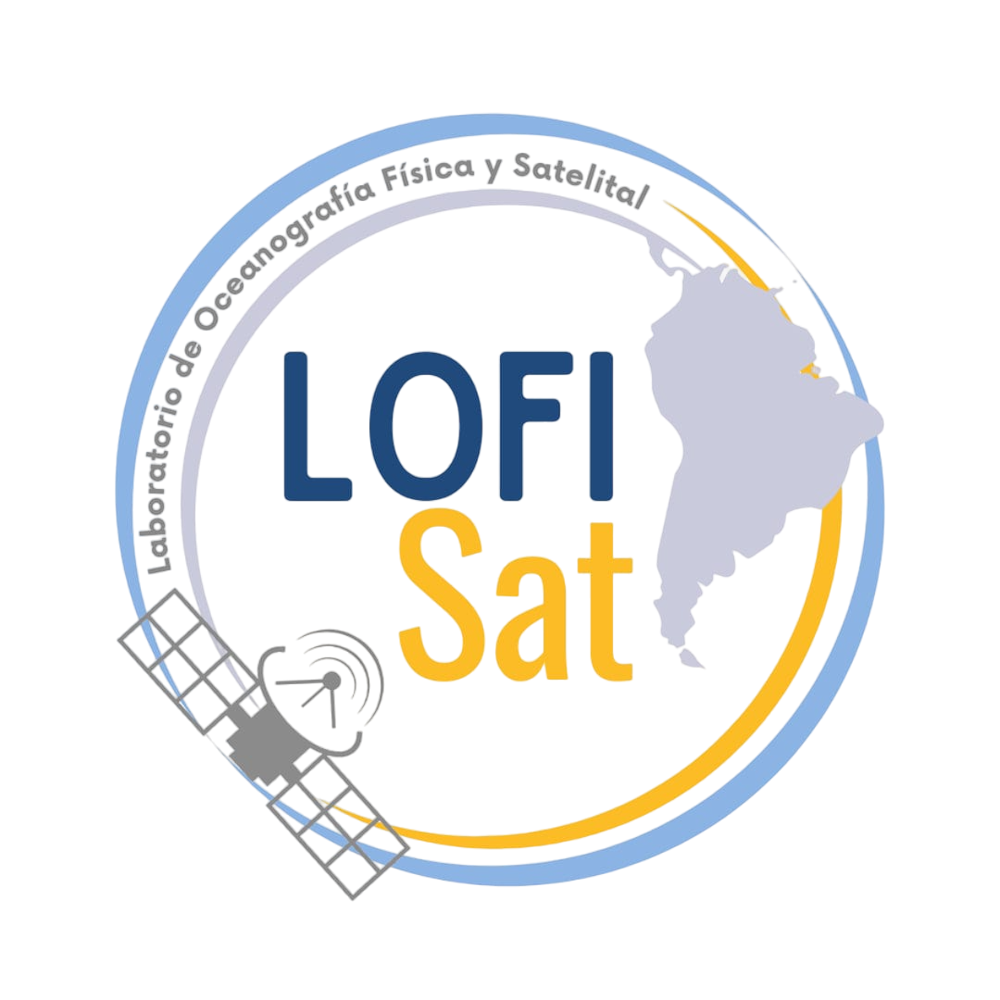

Compromiso con la formación de capital humano avanzado en Ciencias del Mar.

En el Laboratorio de Oceanografía Física y Satelital (LOFISAT-UV), fomentamos la excelencia académica y la investigación rigurosa, guiando a la próxima generación de científicos marinos en el estudio de la dinámica oceánica.
Cargando...
Cargando...